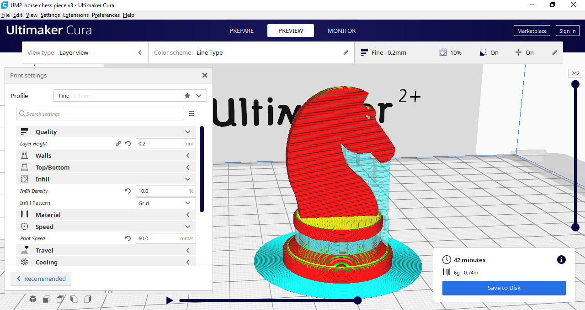
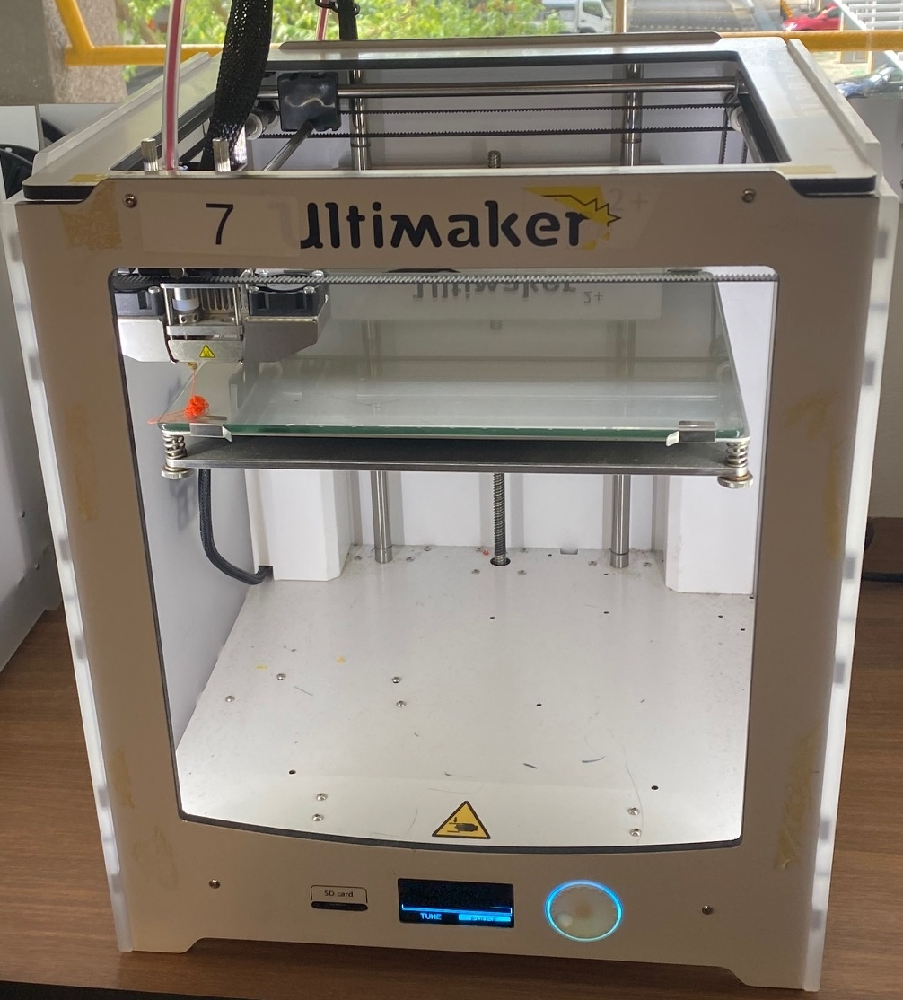
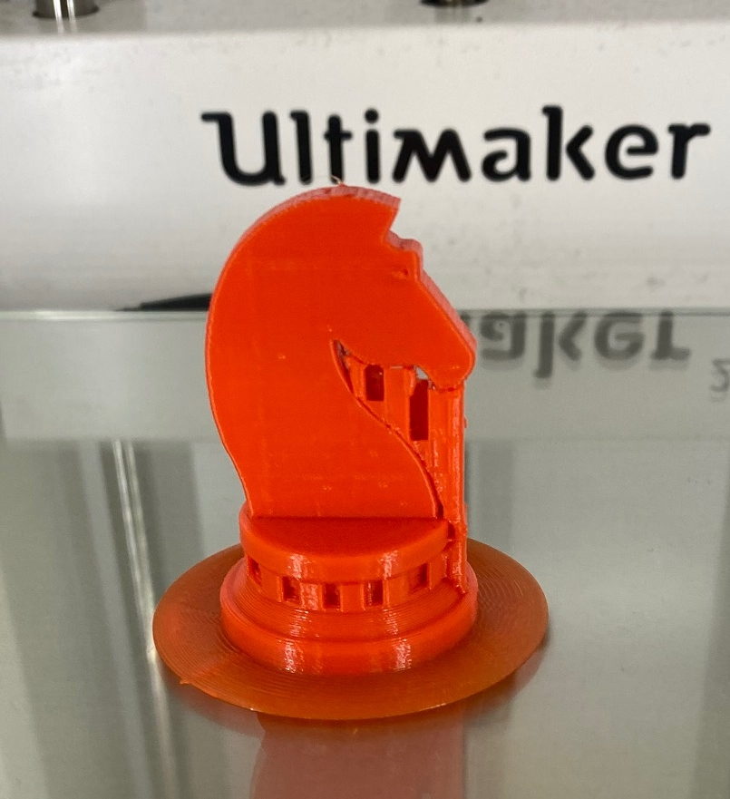
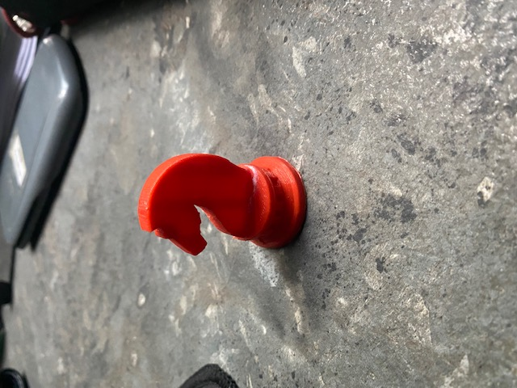

3D Printing
In here, i will be talking about how i used a 3D Printer.
Horse Chess Piece
[Click here to see how i CAD it]
I first exported my completed horse chess piece into another app called "cura". In the app,
i sliced my horse chess piece to prepare for it to be 3D Printed.
The picture shows what the actual horse chess piece and the supports would be printed.

The file for the sliced horse chess piece is then transfered into a S.D card and then inserted
into the 3D printer, where it began printing.
The 3D printer first discharged and excess amount of filament before starting to print the base.
 
The supports were then cut out to finalize the horse chess piece. However, i realised that it was immposible to remove the supports in the base of the chess piece.
Final Product

Hence, one improvement i could have made is to make the base not have so much overhang, making it redundant for any supports in the base.